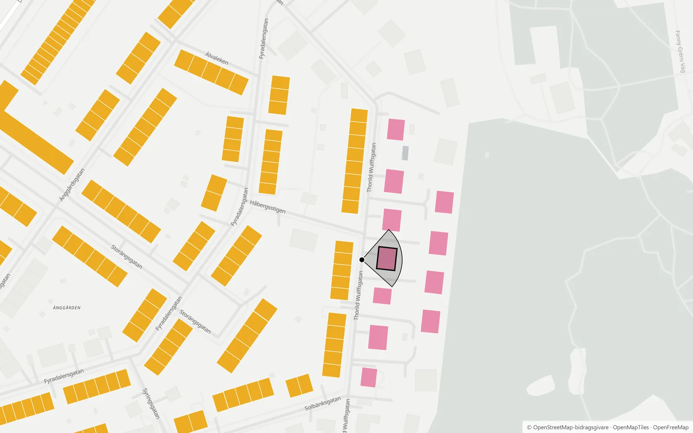

Referensprojekt
Kartläggningar av byggnadsbestånd, från enskilda kvarter till hela städer.
Kommer snartSajten är under ombyggnad
Vi analyserar hela byggnadsbestånd: ålder, energiprestanda och kulturvärden. Snart samlar vi projekt, artiklar och verktyg här.
Illustration med påhittade data.
Kartläggningar av byggnadsbestånd, från enskilda kvarter till hela städer.
Kommer snartPublikationer och konferensbidrag, bland annat om AI-stödd klassificering av byggnader.
Kommer snartInteraktiva kartor och verktyg.

Vad är husen byggda av? Kartan visar de drygt 150 000 byggnader i Sverige, Norge, Danmark och Frankrike där någon har angett fasad, tak eller stomme i OpenStreetMap. Klicka på en byggnad för att se den i gatuvy.